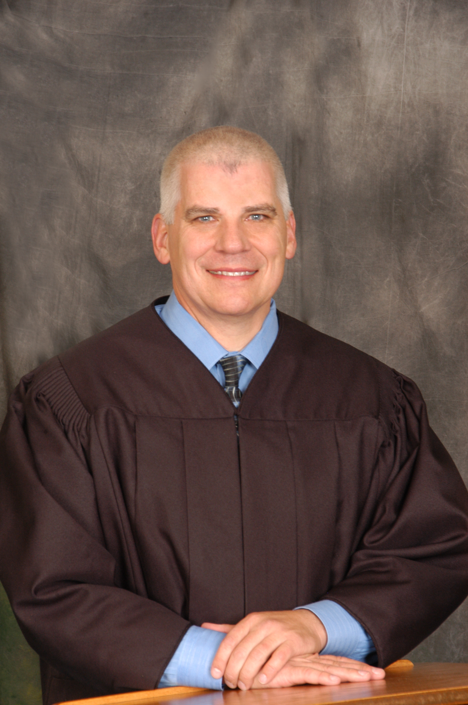

Department 2
Honorable
Egan Walker
(775)328-3179

CLICK HERE TO VIEW CALENDAR SETTINGS FOR A PARTICULAR CASE ON A PARTICULAR DAY. (THIS WILL OPEN A NEW WINDOW AND TAKE YOU TO CASE INQUIRY).Biography
Judge Walker was appointed by Governor Brian Sandoval to serve as the presiding judge in Department 2 on March 10, 2011, and then elected to the remaining term, unopposed in 2012.
Prior to his appointment and election, Judge Walker worked as a Family Court Master, a position he held from January 3, 2009 until his appointment by Governor Sandoval to the District Court bench. As a Court Master, Judge Walker re-worked the child support dockets to increase both the volume of cases heard in court, and the total number of cases resolved without a court hearing. He also assisted in the development of the Self Represented Litigant program, an innovative program designed to manage cases in which at least one of the parties appears without counsel.
Prior to working as a judicial officer, Judge Walker was in private practice, focusing on litigation including Family Law matters. As an example of the breadth of his practice, Judge Walker was one of the principal attorneys who represented the family of Charla Mack, a crime victim murdered by her husband during the parties' divorce. Litigation involving Darren Mack's misconduct crossed nine different cases in both state and federal courts.
From 1992 until March of 2000, Judge Walker worked as a Deputy District Attorney in both Carson City and Washoe County. He was responsible to prosecute all varieties of criminal misconduct, including nine first degree murder trials and more than twenty trials involving allegations of sexual misconduct and/or child abuse. He was member of the Washoe County District Attorney's Office Major Violators Unit, and served on the Washoe County Child Death Review Team.
Judge Walker attended the University of Pacific-McGeorge School of Law, graduating in 1991. While attending law school, he worked as a Registered Nurse in the Cardiac Intensive Care Unit at the University of California, Davis Medical Center.
He graduated from the University of Nevada, Reno, Orvis School of Nursing in 1986, and worked as an RN in ICUs and CCUs in both Nevada and California before, during and after law school.
From 1982 until 1990, Judge Walker was a member of the Army National Guard and Army Reserve, working as a medic, flight medic and nurse.
He currently serves on the Board of Directors of the Healthy Families Foundation. He is past board member and member of Sparks Rotary, and has the pleasure of working with the Reed High School We The People program and at Sierra Vista Elementary School.
Judge Walker and his wife have six children in their blended family, as well as three dogs, a cat and enough fur to fill many vacuums.
Calendar Information for the next 14 days
| Start Time | Case Number & Description | Event Description | Oct-20-2014 |
| 1. 08:18 AM | DV14-00614 - RUBY LEE JOHNSON VS JAMES H. JOHNSON JR (D2) | Request for Submission |
| 2. 08:22 AM | DV14-01090 - IN RE: MARIA GUZMAN & HECTOR GARCIA-MARTINEZ (D2) | Request for Submission |
| 3. 08:47 AM | DV14-00839 - MAIARA EE. PADILL MACEDO VS. JOSE VILLA TORRES (D2 | Request for Submission |
| 4. 09:11 AM | FV11-02973 - JESSE REYES-GONZALEZ VS. ISELA VILLA-CALDERON (D2) | Request for Submission |
| 5. 09:38 AM | DV14-01779 - IN RE: JULIE RILEY & CASEY RILEY (D2) | Request for Submission |
| 6. 10:52 AM | DV13-00568 - DON CIPRIANO VS CANDACE CIPRIANO (D2) | Request for Submission | Oct-24-2014 |
| 7. 08:30 AM | DV14-01452 - VIRGINIA NASH VS. WILLIAM NASH (D2) | CASE MANAGEMENT CONFERENCE |
| 8. 08:30 AM | FV14-02872 - VIRGINIA NASH VS WILLIAM NASH (DM) | OBJ MASTER'S RECOMMENDATION |
| 9. 09:30 AM | DV14-01335 - SCOTT IACOBONI VS ANNE IACOBONI (D2) | CASE MANAGEMENT CONFERENCE |
| 10. 10:30 AM | FV10-04424 - APRIL LW SOVEY VS JACOB D SOVEY (DM) | EXTENDED HEARING - CHILDREN |
| 11. 10:30 AM | DV10-02224 - JACOB D. SOVEY VS. APRIL L.W. SOVEY (D2) | HEARING ON EX PARTE FILING |
| 12. 11:00 AM | DV14-01465 - MELE TAFUNA VS. VILIAMI FINE (D2) | CASE MANAGEMENT CONFERENCE | Oct-27-2014 |
| 13. 08:30 AM | DV99-00129 - **sealed** IN RE: MELISSA A. & ALFRED C. KOCH | HEARING... | Oct-28-2014 |
| 14. 08:30 AM | DV14-01423 - SHAWNA FREEMAN VS. JEFFERY FREEMAN (D2) | CASE MANAGEMENT CONFERENCE |
| 15. 09:30 AM | DV14-00788 - JEANINE MOORHEAD VS MARVIN R. MOORHEAD, JR. (D2) | SETTLEMENT CONFERENCE |
| 16. 11:00 AM | DV14-00614 - RUBY LEE JOHNSON VS JAMES H. JOHNSON JR (D2) | HEARING... |
| 17. 13:30 PM | DV14-00618 - SHAWNA L. APPLEBEE VS. DANIEL A. APPLEBEE | SETTLEMENT CONFERENCE |
| 18. 15:30 PM | DV14-01081 - REBECCA L REITMAN VS. MICHAEL J REITMAN (D2) | SETTLEMENT CONFERENCE | Oct-29-2014 |
| 19. 13:30 PM | DV14-01404 - LINDA M. RITZ VS. ELLIS L. RITZ (D2) | CASE MANAGEMENT CONFERENCE |
| 20. 15:00 PM | DV14-00488 - MICHAEL BRAVO VS. YAJAIRA MAGALLANES-BRAVO(D2) | SETTLEMENT CONFERENCE | Oct-30-2014 |
| 21. 08:30 AM | DV14-00333 - HUMBERTO BECERRA VS. BERTHA A. GARCIA (D2) | CONTESTED DIVORCE TRIAL |
| 22. 11:00 AM | DV14-01122 - LISABETH BERTSCHI VS. JAMES WATKINS ASHER (D2) | CASE MANAGEMENT CONFERENCE |
| 23. 13:00 PM | DV11-02430 - YURI C. WHYMS VS. ANA N. PARKINSON (D2) | ORDER TO SHOW CAUSE |
| 24. 13:30 PM | DV14-01373 - ROBIN ULLOM VS DAVID ULLOM (D2) | CASE MANAGEMENT CONFERENCE |
| 25. 14:30 PM | DV14-01139 - THOMAS S DOLAN VS PATRICIA A DOLAN (D2) | SETTLEMENT CONFERENCE | Nov-03-2014 |
| 26. 08:30 AM | DV14-01067 - CONS: IN RE: MICHAEL CARDOZA AND DIANA FRYE (D2) | CASE MANAGEMENT CONFERENCE |